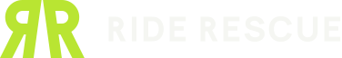
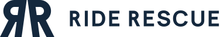
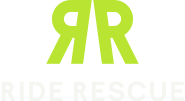
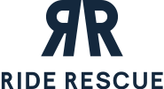
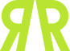
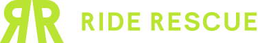

Ride Rescue · Stage 3 · Logo system
Every variation below is the same flat artwork recoloured. Numbers match the brief's list of 12 variations. Light-background (5) and monochrome navy (9) are the same file: lime fails contrast on light backgrounds, so the light version is all navy by design. The promotional 3D treatment (12) is deferred to Stage 5, where it belongs with the other promotional work, and it will be derived from this flat master.






